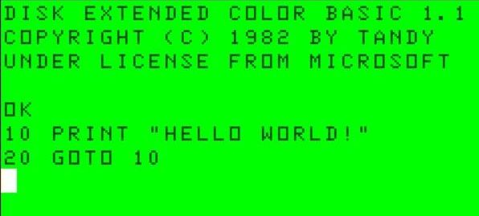

About Me
Computers have been a strong fascination for me since I started college in the early 1980s.

To me, there was nothing cooler then casually going up to a TRS-80 in Radio Shack and sneaking in a few commands in Basic
to endlessly loop a silly message for the world to see.
At that time, Princeton University had an IBM System/360 mainframe that was time-shared with my school, Trenton State College (today: The College of New Jersey). This gave eager and
aspiring computer scientists, such as myself, the opportunity to develop FORTRAN programs by typing one line at a time on punchards,
feed them into a card reading machine we called the "hopper", then come back in a few hours to decipher the gigantic green and white paper
printouts for compiler errors.
If you want to learn more about those fun times, check out this link.
My most vivid takeaway from this was the importance of rubberbanding and marking the sides your card deck to help keep them in order.
Hauling around a shoebox full of punchcards without this precaution was a mistake you only made once.
Moving on to Turbo Pascal brought the modernization of being able to type, compile, and execute code directly through IBM
computer terminals, smartly outfitted with 5.25 floppy disks. I was extremely excited to be able to personalize my work environment by changing my console text color to purple.
So cool! My favorite Pascal project was writing a word processing program from scratch, and tackling the challenge of having only 16KB-32KB of RAM to work with.
After class hours, the computer lab was the best place to de-stress, and you can bet I always had my Zork or
Wizardry disks handy for some much needed downtime (outside of the campus arcade, of course, where I managed to high score Galaga once!).
And so the years passed, and with them the rapid advance of computer and software development technology. I realized early on that the only constant in this profession is change.
Being a professional developer means constantly scrambling to learn new skills, and once mastered, discard them and start over with the next tool, language, technique, or methodology du jour. For me, the only comfort zone comes from
playing games that have been around for more than 15 years, such as World of Warcraft Classic.
I am truly fortunate have lived in such an time of rapid change, with a career that has held my fascination and interest for nearly 40 years.
Technical Leadership
Leadership throughout the full software development lifecycle, including conception, requirement gathering and architecture definition, detailed design, modeling, implementation, delivery, and maintenance. Practiced with Agile Scrum methodology.
Analysis & Troubleshooting
Exceptional analytical and troubleshooting skills, leveraging a broad base of knowledge across a variety of business sectors, roles, and technical skills. Experienced with large scale data migrations, conversions, legacy systems. Adept at proposing creative solutions, prototyping, and thinking outside the box.
Technical Skills
- Software Development
- Software Architecture
- Application & Data Integration
- Desktop Applications
- Web Applications
- Web Services
- Data Transformation, ETL
- Project Management
- Database Administration
- Conversions & Migrations
- Agile/Scrum Methodology
- Technical Documentation